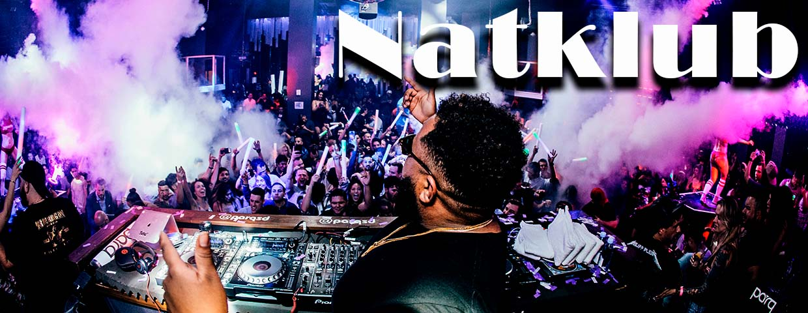

<!DOCTYPE html>
<html lang="en">
  <head>
    <meta charset="UTF-8" />
    <meta http-equiv="X-UA-Compatible" content="IE=edge" />
    <meta name="viewport" content="width=device-width, initial-scale=1.0" />
    <link
      href="//db.onlinewebfonts.com/c/19007e0c85468fd509414342e0ca9c68?family=Broadway"
      rel="stylesheet"
      type="text/css"
    />
    <link rel="stylesheet" href="css/style.css" />
    <title>Trident</title>
  </head>
  <body>
    <nav>
      <ul>
   
        <div id="logo"></div>
        <li><a href="index.html">Natklub</a></li>
        <li><a href="index.html">Galleri</a></li>
        <li><a href="index.html">Spillested</a></li>
      </ul>
    </nav>
    
    <section id="top">
      <div id="topimage">
        
      </div>
      <h4>
        Trident er en af landets mest prominente natklubber, som også indeholder
        et live spille-sted og et galleri
      </h4>
      <br />
      <p>
        I weekender og på helligdage har natklubben altid et solidt line-up af
        internationale og lokale kunst- nere lige fra verdensscenen og over til
        undergrunden. På hverdage er der adgang til Galleriet fra kl.10 – 18 og
        i weekender og helligdage er der åbent fra kl. 12-24.
      </p>
      <br />
      <p>
        Trident er 3 etager med fest og oplevelser. Galleriet som også fungerer
        som pre-clubbing spisested og oplevelsessted, Livestage som er den lidt
        mere intime underetage hvor der spilles live samt ClubHall på tagetagen,
        hvor de største DJ´s spiller op til dans på det massive lydsystem.
      </p>
      <br />
      <p>
        Musikprofilen i natklubben er bred, men spænder fra electronica, gennem
        bass musik, til house og techno. Livestage er lige så bred, men
        inkluderer også rock.
      </p>
    </section>
   
    <section id="events">
      <h6>Kommende events</h6>
      <div>
        
        <h5>Natklubben</h5>
        <p>
          DJ PiranaHH vælter Trident´s ClubHall fredag den 1.februar kl.
          23-05.00, med speciel gæsteoptræden af ingen ande end DJ Div IIne. Læs
          mere ...
        </p>
      </div>
      <div>
        
        <h5>Galleriet</h5>
        <p>
          Vi har inviteret 2 upcomming fotokunstnere, som er værd at lægge mærke
          til. Læs mere om dem under galleri og se en smagsprøve på deres
          værker. Udstilling 27.januar - 4.marts Læs mere....
        </p>
      </div>
      <div>
        
        <h5>Spillestedet</h5>
        <p>
          Se og oplev Tazz live lørdag den 2. februar. Tazz er foruden deres
          helt anderledes og spændende tilgang til techno også kendt for at have
          det vildeste lysshow når de spiller live. Læs mere....
        </p>
      </div>
    </section>
    
    <footer>
      <div id="footertop">
        <div id="textwall"></div>
        <div id="nyhedsbrev">
          <div id="nyhedsbrevbox">
           
            <h2>Nyhedsbrev</h2>
            <h6>Tilmeld dig her</h6>
            <form>
            <input
              type="email"
              id="email"
              placeholder="Skriv din e-mail her"
              multiple
              required
            />
            <input type="submit" />
            </form>
          </div>
        </div>
      </div>
      <div id="footerbottom">
        <div id="info">
          <p>Trident </p>
          <p>Tridentsgade 6</p>
          <p>1201 København K</p>
          <p>E-mail: info@trident.dk</p>
          <p>Tlf. +45 65 70 70 70</p>
        </div>
        <div id="socials">
          <p>Følg os på:</p>
          <div id="icons">
            <a id="facebook" href="index.html"><div id="facebook"></div></a>
            <a id="twitter" href="index.html"><div id="twitter"></div></a>
            <a id="instagram" href="index.html"><div id="instagram"></div></a>
          </div>
        </div>
        
        <div>
    </footer>
  </body>
</html>
